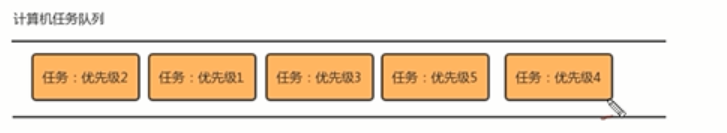

普通的队列是一种先进先出的数据结构，元素在队列尾追加，而从队列头删除，在某些情况下，我们可能需要找出队列中的最大值或者最小值，例如使用一个队列保存计算机的任务，一般情况下，计算机的任务都是有优先级的，我们需要在这些计算机的任务中找出优先级最高的任务先执行，执行完毕后就需要把这个任务从队列中移除。普通的队列要完成这样的功能，需要每次遍历队列中的所有元素，比较并找出最大值，效率并不是很高，这个时候，我们就可以使用一种特殊的队列来完成这种需求，优先队列。

优先队列按照其作用不同，可以分为一下两种：
最大优先队列：
可以获取并删除队列中的最大的值。
最小优先队列：
可以获取并删除队列的中最小的值。
最大优先队列：
堆这种结构可以方便的删除最大的值，所以，可以基于堆来实现最大优先队列。
最大优先队列API设计：

代码实现：
public class MaxPriorityQueue(T extends Comparable<T>){
private T[] items;
private int N;
public MaxPriorityQueue(int capacity){
this.items=new Comparable[capacity+1];
this.N=0;
}
//判断堆中索引i处的元素是否小于索引j处的元素
private boolean less(int i,int j){
return items[i].compareTo(items[j])<0;
}
//交换堆中i索引和j索引处的值
private void exch(int i,int j){
T com=items[i];
items[i]=items[j];
items[j]=com;
}
//往堆中插入一个元素
public T insert(T t){
item[++N]=t;
swim(N);
}
//删除堆中最大的元素，并返回这个最大的元素
public T delMax(){
T max=items[1];
exch(1,N--);
sink(1);
return max;
}
//使用上浮算法，使索引k处的值能在堆中处于一个正确的位置
private void swim(int k){
while(K>1){
if(less(k/2,k)){
exch(k/2,k);
}
k=k/2;
}
}
//使用下沉算法，使索引k处的值能在堆中处于一个正确的位置
private void sink(int k){
while(2*k<=N){
int max;
if(2*k+1<N){
if(less(2*K,2*K+1)){
max=2*k+1;
}else{
max=2*k;
}
}else{
max=2*k;
}
if(!less(k,max)){
break;
}
exch(k,max);
k=max;
}
}
}
最小优先队列：
最小堆：
1、最小的元素放在数组的索引1处；
2、每个节点的数据总是小于等于它的两个子节点的数据。
最小优先队列的API设计

代码实现
public class MinPriorityQueue<>{
private T[] items;
private int N;
public MinPriorityQueue(int capacity){
this.items=(T[])new Comparable[capacity+1];
this.N=0;
}
public int size(){
return N;
}
public boolean less(int i,int j){
return items[i].compareTo(items[j])<0;
}
private void exch(int i,int j){
T tmp=items[i];
items[i]=items[j];
items[j]=tmp;
}
public void insert(T t){
item[++N]=t;
swin(N);
}
public T delMin(){
Comparable min=items[1];
exch(i,N);
N--;
sink(1);
return min;
}
private void swim(int K){
while(k>1){
if(less(k,k/2)){
exch(k,k/2);
}
k=k/2;
}
}
private void sink(int k){
while(2*k<=N){
int min;
if(2*k+1<=N){
if(less(2*k,2*k+1)){
min=2*k;
}else{
min=2*k+1;
}
}else{
min=2*k;
}
if(less(k,min)){
break;
}
exch(k,min);
k=min;
}
}
}
索引优先队列：
最小和最大优先队列，分别可以快速访问到队列中最大元素和最小元素，但是他们有一个缺点，就是没有办法通过索引访问已经存在优先队列中的对象，并且更新他们。为了实现这个目的，引入了索引优先队列。
索引优先队列的实现思路：
步骤一：

步骤二：


步骤三：

总结：
要使用三个一维数组
items[]用来保存数据元素；
pq[]用来保存items中的元素的索引，实现堆有序；
qp[]用来保存pq[]数组的逆序。（逆序：内容下标相互交换，目的是快速查找）
索引优先队列的API设计

代码实现：
day04 113-118